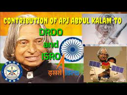

> 1931 : Born Avul Pakir Jainulabdeen Abdul Kalam on October 15, in Rameswaram, Tamil Nadu.He was born and raised in Rameswaram, Tamil Nadu and studied physics and aerospace engineering.

>1960 : Gains degree in Aeronautical Engineering from Madras Institute of Technology.bdul Kalam attended the Madras Institute of Technology, where he received a degree in aeronautical engineering in 1960. After graduation he joined the Defence Research and Development Organisation (DRDO)—an Indian military research institute—and later the Indian Space Research Organisation (ISRO).
>1969 : Transferred to ISRO from the DRDO. 1969 Kalam was transferred to ISRO (Indian Space Research Organization). The project Satellite Launch Vehicle (SLV-III) which was the country's one of the important project was led by Abdul Kalam, He was the head of the project.
>2002-2007 : Kalam became the prsident of india in 2002.Kalam played a leading role in the development of India’s missile and nuclear weapons programs. He planned a program that produced a number of successful missiles, helping earn him the nickname “Missile Man.” Beginning in the early 1990s, he also served as scientific adviser to the government, and his prominent role in India’s 1998 nuclear weapons tests established Kalam as a national hero. In 2002 the Hindu nationalist (Hindutva) National Democratic Alliance nominated Kalam, a Muslim, to succeed outgoing President K.R. Narayanan. Kalam easily won the elections in 2002, and in the largely ceremonial post he sought to use science and technology to transform India into a developed country. In 2007 he was succeeded by Pratibha Patil, the country’s first woman president.